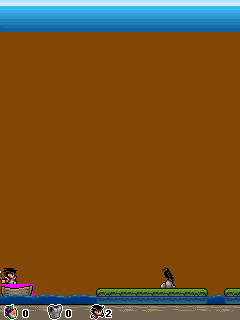

Our touch controls could keep several contacts held. Dragon Island’s original handler still selected one active key. We needed to retain those fingers on the Android side while sending a contract the game actually understood.DI02
The original jump.

Dragon Island’s original 240×320 first level, character/platform and HUD, retained from historical desktop ARM execution. Original framebuffer pixels, not a phone screenshot.
Open the image for the full original view.
DI90Holding a direction with Jump used the game’s dedicated 1 or 3 diagonal-jump action. When that action ended, the adapter restored the direction still held by its owner. Supporting multiple fingers in the host did not require pretending the original accepted arbitrary simultaneous masks.DI02DI03
Axe, Jump, confirmation and menu kept their separate original keys. Unused exposed digits stayed faithful rather than acquiring invented abilities.DI03
Older contracts, a working baseline.
The original loader and applet used the earlier BREW layout, so the compatible execution family still needed this edition’s loader and handler contracts. The retained route reached its level and original settings/save behavior.DI04DI05DI06
The later package records my working-build feedback before we changed the icon. The gameplay baseline and that icon update have separate records, with the host checks keeping their own limits.DI07DI08
About these records
This is the supplied Macrospace BREW edition. Independent host input ownership and the original one-active-key handler are distinct layers. Retained host gameplay, native save boundaries and owner working-build feedback are not expanded into a completed campaign or a new phone verdict. The image is historical original-engine desktop output.
The receipts
Selected source lines, investigation notes and recorded feedback. Open a receipt for the original context and scope.
DI02 / The original game has one active keyCheckpoint investigation notes
Source: Dragon_Island_Bridge_v0.1.1_PRIVATE_CHECKPOINT.zip / Dragon_Island_Bridge_v0.1.1_PRIVATE/AGENTS.md · selected lines 9–13
The original BREW 1.x loader uses version 0x10000 followed by the helper table; the applet handler is at +0x1c. The original key switch is at MOD+0x740c. It assigns one active key mask. 1/3 are native diagonal jump actions, not arbitrary two-cardinal chords. DragonInput owns held key choices and restores remaining holds on release. Never write invented input masks into original game memory.
DI90 / Historical image / Dragon IslandHistorical host capture
Source: Dragon_Island_Bridge_v0.1.1_PRIVATE/evidence/03-level.png
Retained historical host output. Original emulator chrome, where present, is part of the unchanged source image. No phone capture or phone performance is inferred.
Unchanged historical image. Source member: Dragon_Island_Bridge_v0.1.1_PRIVATE/evidence/03-level.png SHA-256: b152751d5827d4beb3fcf6caf445d349253b994c2a36064410aec2a59731d9f3 Dragon Island’s original 240×320 first level, character/platform and HUD, retained from historical desktop ARM execution. Original framebuffer pixels, not a phone screenshot. Scope: Unchanged historical desktop original-runtime framebuffer. Visually inspected: game-only pixels, no personal interface and no EXIF. Not a physical-phone screenshot.
DI03 / Dedicated diagonal jumps and restoring a held directionCheckpoint investigation notes
Source: Dragon_Island_Bridge_v0.1.1_PRIVATE_CHECKPOINT.zip / Dragon_Island_Bridge_v0.1.1_PRIVATE/README_FIRST.txt · selected lines 20–32
CONTROLS D-pad: run left/right, climb up/down. JUMP sends original 5; AXE sends original 0. Holding a direction with JUMP sends the game's original diagonal 1 or 3. OK confirms. MENU / CLR sends the original Clear/menu input. Android Back closes the bridge and returns to its caller. The visible ORIGINAL KEYPAD button swaps the bottom controls inline; D-PAD RETURN switches back without restarting. Keypad digits 2/4/6/8 replace equivalent original arrows. Original softkeys, 7/9/*/# are exposed faithfully, though this edition ignores those inputs. Controller: D-pad movement; A jump; X axe; B Clear/menu; Start OK; L1/R1 diagonal jumps. The shared UI retains independent touch/controller ownership. The game itself has a one-active-key handler. The adapter restores a still-held direction when another action ends rather than inventing simultaneous guest bit masks.
DI04 / An older loader and applet contractCheckpoint investigation notes
Source: Dragon_Island_Bridge_v0.1.1_PRIVATE_CHECKPOINT.zip / Dragon_Island_Bridge_v0.1.1_PRIVATE/VERIFICATION.txt · selected lines 45–55
COMPATIBILITY WORK - BREW 1.x startup prefix supplies version 0x10000 and helper table. - This original AEEApplet stores its handler at +0x1c, unlike the donor title. - Original event behavior uses EVT_KEY 0x101 plus press/release lifecycle events. - Native BMP support includes the original 1-bit and indexed artwork. - Native display text alignment is implemented. Handset system fonts use DejaVu Sans compatibility glyphs; those are not claimed to be the original handset's exact font. The game's own bitmap artwork is unchanged. - Original indexed DB calls persist set/high/save/tut records. Original MIDI buffers flow to Android MediaPlayer with completion notifications returned to the guest worker. Live acoustic output is not established by host tests.
DI05 / Original startup, level and setting persistenceCheckpoint investigation notes
Source: Dragon_Island_Bridge_v0.1.1_PRIVATE_CHECKPOINT.zip / Dragon_Island_Bridge_v0.1.1_PRIVATE/VERIFICATION.txt · selected lines 13–21
BASELINE EXECUTION / UI CHECKS (v0.1.0) - Original MIF identifies Macrospace Dragon Island v1.0.2, class 0x010139a6. - Byte-identical original MOD/BAR/MIF are checked at boot; no original patches. - 40 host checks execute the original ARM module, applet, start handler, title, main menu, scrolling story, original tutorial, first level, directional inputs, dedicated diagonal jumps, axe input, original menu, suspend/resume and cleanup. - The actual settings UI changes the music setting, writes the original indexed record, and restores it through a fresh guest session. No guest state writes or forced progress are used by the acceptance test.
DI06 / Native indexed saves and their recorded boundaryCheckpoint investigation notes
Source: Dragon_Island_Bridge_v0.1.1_PRIVATE_CHECKPOINT.zip / Dragon_Island_Bridge_v0.1.1_PRIVATE/README_FIRST.txt · selected lines 34–41
REPORTS / SAVES SAVE REPORT independently exports a .txt to Downloads/Dragon Island Bridge/. Reports read cached real execution state and do not wait for the guest worker. Android 8/9 may request legacy storage permission. Failed exports stay failures; private fault evidence is retained. Phone Downloads export remains untested. Original indexed databases set/high/save/tut are persisted atomically under the bridge's own files directory. The original settings UI save/read cycle is tested; complete level-end progress save/load has not yet been reached and verified.
DI07 / The owner working-build account precedes the icon updateCheckpoint investigation notes
Source: Dragon_Island_Bridge_v0.1.1_PRIVATE_CHECKPOINT.zip / Dragon_Island_Bridge_v0.1.1_PRIVATE/VERIFICATION.txt · selected lines 3–9
ICON UPDATE v0.1.1 - User reports the previous build working well. This update changes the icon, version and associated packaging inventory/documentation. Runtime, game input mappings and UI kit remain byte-identical at source level. - Rebuilt and signed with the same owner key; original host checks and strict Omni inventory/reconstruction checks pass again. See evidence/*v011*.txt and evidence/icon-update-verification.txt.
DI08 / Host checks are separate from physical acceptanceCheckpoint investigation notes
Source: Dragon_Island_Bridge_v0.1.1_PRIVATE_CHECKPOINT.zip / Dragon_Island_Bridge_v0.1.1_PRIVATE/VERIFICATION.txt · selected lines 22–43
- Shared UI Kit 1.1.2 release JAR: all 12 Android API 34 framework checks pass, including cold startup, independent contacts, dialogs, switching and cleanup. - Two production Activity API 34 integration scenarios pass with the real Java Activity, controls, guest worker and original APK assets under Robolectric. Both modes fit 360x740, 412x820, 800x1200, 915x370 and 1280x720 measured bounds. Renderer bounds remain aspect-correct and unchanged during mode switching. - Direction + jump reaches the native dedicated jump key. Mode switching releases touch ownership while retaining a physical direction. A report snapshot returns promptly while the real game executor is deliberately blocked. - APK compiles against API 35, D8 min API 26, aligns and verifies v2/v3 signatures. - Strict Omni inventory and exact-original import/export metadata are embedded. A local contract test strips originals, checks zero-byte placeholders, rebuilds them from the actual supplied RAR, compares every byte and retained entry, and rejects a changed original even when its filename is unchanged. NOT YET VERIFIED - Physical phone/tablet gameplay, touch comfort, font/display scale, real insets, heard MIDI, background audio behavior, Downloads export and extended play. - Full-game completion and actual level-end progress save/load. - Actual current Private Omni hosted startup, save isolation, update selection, and the cumulative two-public-export workflow including a later unrelated game. The local metadata test does not substitute for those production host checks.